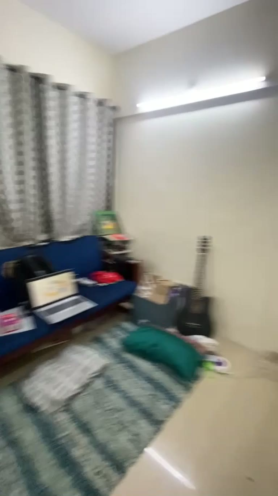

00:12 · Bedroom
Video-derived · Not a survey
01 A small spatial study
Flat 501
A compact one-bedroom, rebuilt from a 23-second walkthrough — with every certainty and every unknown left visible.
The entrance opens into the living hall. A narrow far zone, an open wash alcove and a separate bedroom follow. Beyond the bedroom curtains, a white-framed safety mesh closes the utility balcony. This digital twin brings those fragments into one explorable whole.
- Layout
- 1 bed + balcony
- Reported area
- 400 sq ft
- Evidence
- 23.2 s video
- Geometry
- Provisional
Separate bedroom & balcony opening
Left openFar-zone function & all dimensions
How to read this model
- Confirmed — seen in the footage
- Inferred — a reasoned interpretation
- Unknown — deliberately unresolved
- Provisional — modelled, not measured
02 Explore the model
A flat you can turn over.
Orbit the reconstruction, step inside the entrance hall, or read it from above. Selecting one room keeps the 3D view, floor plan and dossier in step.
Visual reconstruction · scale uncalibrated
Assembling the flat
Building a provisional model from the walkthroughThe interactive model is unavailable.
This browser could not start WebGL. The synchronized plan, room notes and source walkthrough below remain fully available.
Open the floor plan03 Plan & dossier
The flat, drawn out.
The plan is generated from the same records as the 3D model. Room shapes, openings and furniture are provisional; confidence labels describe what the footage supports.
Provisional layout · Level 05
Scroll the plan sideways to see every room
Not to scale · all dimensions provisional
04 Source material
See what the model saw.
The original walkthrough is embedded unchanged. Chapter markers jump to the rooms and details used in the reconstruction.
H.264 · 512 × 910 · 23.2 seconds · AAC
What appears when
Timestamps refer to the supplied 23.2-second file. The camera is hand-held and the sequence is continuous.
Five frames that anchor the model
Select a frame to inspect it larger.
05 Evidence register
What is known. What is not.
Every major feature is linked to a moment in the walkthrough. Inferences are labelled as inferences; unknowns are not filled in for visual convenience.